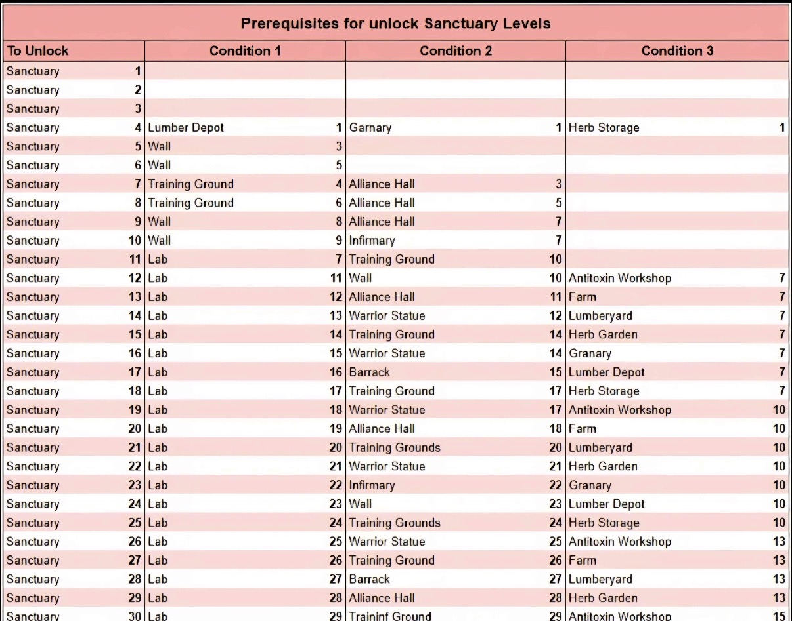

2. Growth & Progression
Sanctuary & buildings
Check the requirements for your next Sanctuary level before you start spending builders randomly. Prioritize prerequisite buildings so you are not waiting on a forgotten upgrade later. Keep your Farms, Lumberyards, Herb Gardens, Warehouses, medicine-related buildings, survivor housing, and other support infrastructure developed enough to sustain continued growth.
Sanctuary Upgrade Requirements
Use this chart to check the building prerequisites for your next Sanctuary level.

Research
Do not let the Lab fall far behind. Research improves development, economy, troop training, and combat, and the Lab is also part of Sanctuary progression. Early speed research pays you back repeatedly as your account grows.
Heroes & troops
One excellent primary squad is more useful than several half-built squads. Give Squad 1 first priority on scarce hero materials. Keep troop training running and work steadily toward stronger troop tiers rather than treating troop training as an occasional event-only activity.
Survivors & event efficiency
Keep survivors working and make sure the infrastructure supporting them can keep up. When practical, time large construction, research, hero-development, and troop-training pushes with the matching Alliance Duel day. That gives the same resource two jobs: progression and event points.
2. Croissance & progression
Sanctuaire & bâtiments
Vérifiez les exigences du prochain niveau de Sanctuaire avant de lancer des améliorations au hasard. Priorisez les bâtiments prérequis. Gardez vos Fermes, Scieries, Jardins d'herbes, Entrepôts, bâtiments liés aux médicaments, logements des survivants et autres infrastructures suffisamment développés pour soutenir votre progression.
Prérequis d'amélioration du Sanctuaire
Utilisez ce tableau pour vérifier les bâtiments requis pour votre prochain niveau de Sanctuaire.
Recherche
Ne laissez pas le Laboratoire prendre trop de retard. La recherche améliore le développement, l'économie, l'entraînement et le combat, et le Laboratoire fait aussi partie de la progression du Sanctuaire.
Héros & troupes
Une excellente escouade principale est plus utile que plusieurs escouades à moitié développées. Donnez la priorité à l'Escouade 1 pour les matériaux rares. Gardez l'entraînement des troupes actif et progressez régulièrement vers les niveaux de troupes supérieurs.
Survivants & efficacité des événements
Gardez les survivants au travail et assurez-vous que l'infrastructure suit. Lorsque c'est pratique, synchronisez les grosses améliorations de construction, recherche, héros et troupes avec le bon jour du Duel d'Alliance.